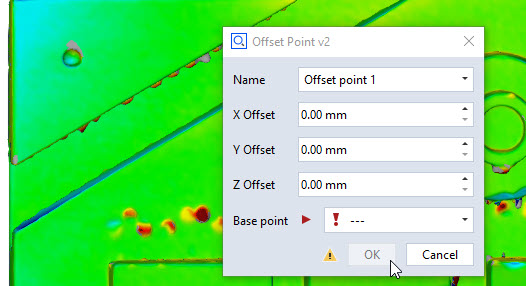

offset_point_v2 (Includes preview calculation)

Short description
This example is an extension of the offset_point_simple example, which has been discussed in the general How-to: Scripted actuals.
It shows how to enhance user experience using preview calculation and error handling.
Highlights
Preview calculation
From many of the built-in commands of ZEISS INSPECT, you know the calculation of a preview element during the creation dialog. This means, you can already see the calculation result in the 3D view, while tweaking some parameters in the dialog.
To achieve this behaviour in a scripted element, you need to set up an event handler for the dialog (see also: How-to: User-defined dialogs).
1def dialog_event_handler (widget):
2 # No treatment of system events
3 if str(widget) == 'system':
4 return
5 # If preview calculation returned with error
6 if str(widget) == 'error':
7 DIALOG.control.status = context.error
8 return
9 # If preview calculation was successful
10 if str(widget) == 'calculated':
11 DIALOG.control.status = ''
12 DIALOG.control.ok.enabled = True
13 return
14
15 # All other changes in the dialog --> calculate preview
16 params['x'] = DIALOG.i_x.value;
17 params['y'] = DIALOG.i_y.value;
18 params['z'] = DIALOG.i_z.value;
19 params['base'] = DIALOG.point.value
20 context.name = DIALOG.name.value
21 DIALOG.control.ok.enabled = False
22 context.calc(params=params, dialog=DIALOG)
23
24DIALOG.handler = dialog_event_handler
The event handler function is to be defined taking one argument. This argument will be a handle to the cause (the event) triggering the handler. This can be a string message or a handle to a specific widget of the dialog. We’ll come back to this in a second
The handler function shown above basically reads the current set of parameters from the DIALOG to the params array (lines 16-19). In this case, the offset values and base point. Then, the preview calculation is started using the special functional context.calc, which is a function handle taking the set of params and a reference to the dialog triggering the preview (line 22).
Attention
Only call context.calc(...) from a script dialog’s event handler function, NOT from the scripted element’s dialog function itself.
The handler is applied to the dialog in the dialog function of the scripted element, just before the dialog is shown to the user (line 23).
Status and error handling
Using the dialog’s event handler, we can also make the dialog responsive to successful or failed preview calculations. Therefore, the DIALOG.control.ok.enabled can be used to control the enabledness of the dialog’s OK button.
In line 21, the OK button is disabled before preview calculation is started.
Furthermore, the scripted element framework provides two special event triggers: error and calculated, which are sent on failing/success of the calculation function to the dialog referenced in the context.calc call.
In this case, we set a potential error message of a failed calcualtion to the dialogs error indicator (line 7), or enable the OK button and reset the error indicator in case of a successful calculation (lines 11-12).
Stageful calculation and error handling
Above, we discussed changes applied to the scripted element’s dialog function. Now, let’s take a look at the calculation function.
1def calculation(context, params):
2 valid_results=False
3 # Calculating all available stages
4 for stage in context.stages:
5 # Access element properties with error handling
6 try:
7 base = params['base'].in_stage[stage].center_coordinate
8 context.result[stage] = (base.x + params['x'], base.y + params['y'], base.z + params['z'])
9 context.data[stage] = { "ude_mykey" : 123456 }
10 except Exception as error:
11 context.error[stage] = str(error)
12 else:
13 valid_results=True
14 return valid_results
The first noticeable difference to the offset_point_simple example is the calculation over all stages of the project, whose indices can be obtained using context.stages (line 4).
See also
If you are not familiar with the concept of stages, get an impression in our Starter Training.
Second, the access of element properties is also respecting the current stage using the .in_stage mechanism (line 7).
Third, you can see that the calculation is surrounded by a try/except block that catches potential errors and sets arising error messages to context.error. This examples catches all exceptions in a very basic way. In a real-world application, you should distinguish several types of exceptions you’d expect and set meaningful error messages. The context.error message is then handled in the dialog as discussed above (see Status and error handling).
Storing generic element data
You can observe an assignment to the context.data member (line 9). If you assign a dictionary (map) to this data structure, you can save user-defined tokens to the scripted element. These are key/value pairs that can hold generic information you might to retrieve in consecutive scripts or checks that reference the created scripted element.
Note
Keys of user-defined tokens need to start with ude_. For more information, see the Scripted elements API documentation.
After element creation of such an offset point with name “Offset point 1”, you could access this data again like:
import gom
print (gom.app.project.actual_elements['Offset point 1'].ude_mykey)
Output:
> 123456